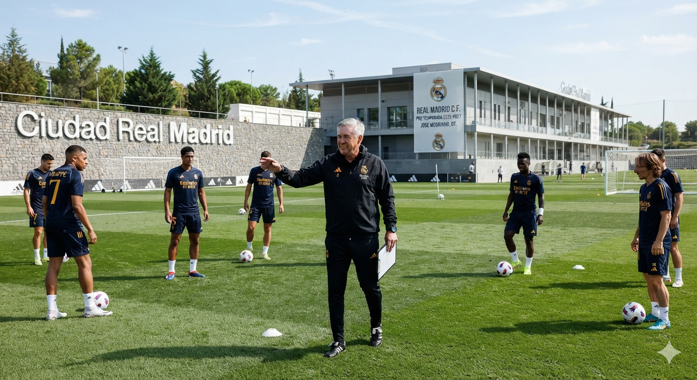

مستجدات وتقارير الملاعب الحصرية

ريال مدريد
ريال مدريد يبدأ رسميًا استعداداته للموسم 2026-2027 بقيادة جوزيه مورينيو.
استأنف ريال مدريد تدريباته للموسم الجديد بعد الفحوصات الطبية، وبدأ الفريق أولى الحصص التدريبية استعدادًا للمباريات الودية وانطلاق منافسات الموسم 2026-2027.
اليوم
التحكم بالدقة:
⚙️ تفاصيل وبصمة البيئة المتصلة حالياً
نظام العميل الأساسي:-
أبعاد ودقة الشاشة الحالية:-
محرك تصفح الويب المتصل:-
لغة الجهاز الافتراضية:-
حالة المزامنة والربط:Proxy متصل ومؤمن